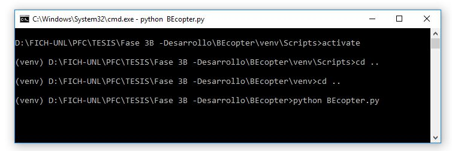
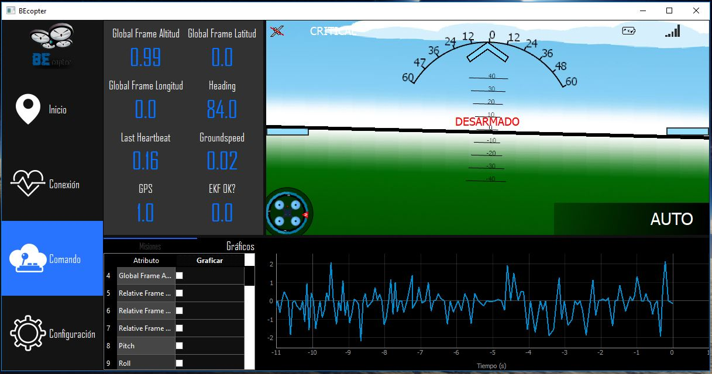

Introducción a BEcopter¶
BEcopter es una plataforma para el guiado y navegación de vehículos aéreos no tripulados, en la cual en versiones posteriores se tendrá como fin abarcar más tipos de vehículos, ya sean aéreos o no. Este proyecto ha sido desarrollado con la ventaja de poder ser ejecutado en varias plataformas, por lo cual, puede correr en distintos tipos de sistemas operativos como Windows, Linux y iOS. Se distribuye bajo la licencia GLP, por lo tanto, es de tipo open source y puedes realizar tus respectivas modificaciones si lo crees necesario; para realizar modificaciones debes ingresar al siguiente link en GitHub
Restricciones¶
Es importante mencionar, que al encontrarnos en etapas tempranas del RELEASE, el proyecto es compatible inicialmente con el siguiente hardware
Hardware¶
- Placa Raspberry Pi 3
- Placa Navio2. Navio2
- Estructura del vehículo con sus respectivos motores y cables de datos/alimentación.
- Un Joystick de PC.
- Batería tipo LiPo
- Router Wifi / Módulos XBee.
Software¶
- Tener instalado Python 2.7.x
- El vehículo debe tener instalado el firmware proporcionado por ArduPilot (Además de tener calibrados sus respectivos sensores)
Instalación¶
Para su respectiva instalación simplemente descargamos el proyecto desde GitHub y mediante los siguientes comandos podemos empezar a utilizar BEcopter
{kind=link}
Primeros pasos¶
Cuando iniciemos BEcopter por defecto nos mostrará la pestaña de ayuda, donde nos proporcionará información sobre el uso de BEcopter, en caso de necesitarla. En primera instancia vamos a tener habilitado dos pestañas que son la pestaña de CONEXION y la pestaña de COMANDO. Estas pestañas son de suma importancia ya que de estas dos depende el control del vehículo.
En la pestaña de conexión vamos a tener disponible dos campos en el cual debemos escribir el IP de nuestro equipo conectado a la red (debe ser la misma al que está conectado el vehículo) y el puerto por defecto es 14450. Una vez ingresados pulsamos conectar y si todo está correcto BEcopter establecerá una conexión con el vehículo mostrando la información pertinente. En la pestaña COMANDO se deberá seleccionar el Joystick que será el encargado de controlar el vehículo y además este habilitará el envió de misiones.
Por último, tendremos a BEcopter corriendo y en condiciones de volar nuestro vehículo.
{kind=link}